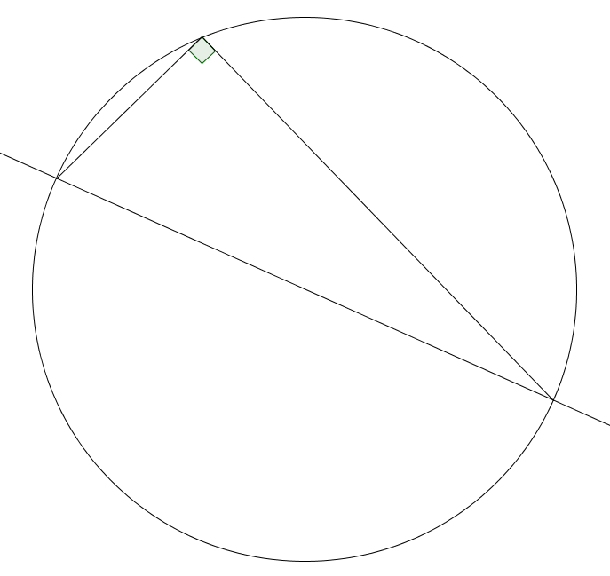
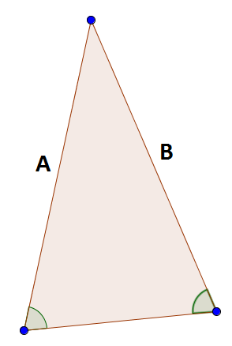
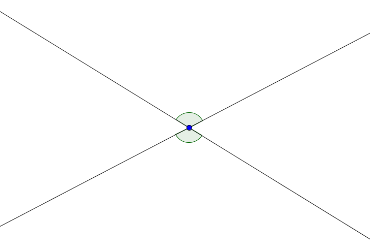
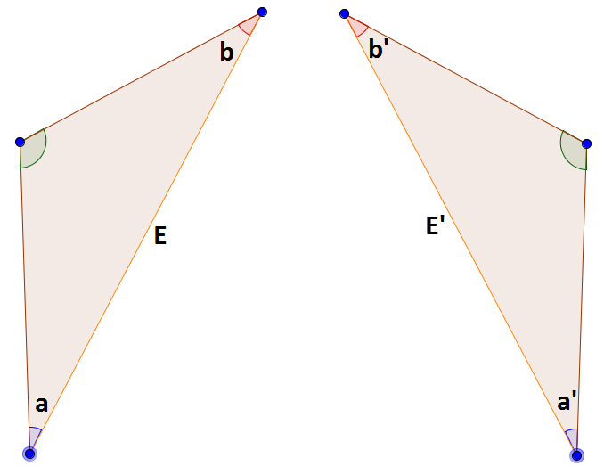
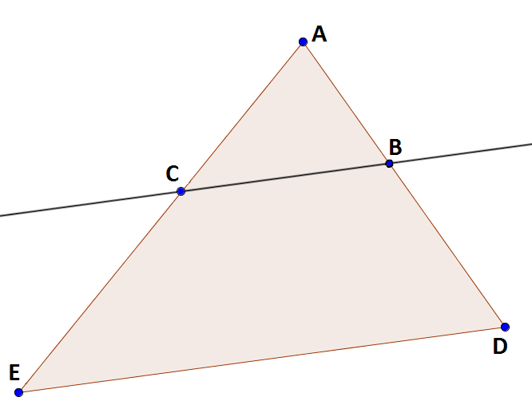

Thales of Miletus
Thales of Miletus
Thales learned geometry from the Egyptians. For the Egyptians geometry was a practical skill necessary for construction and surveying. Thales extracted basic principles from the Egyptians' practical knowledge. He then used these basic principles to prove general theorems. His general theorems could then be put to practical use in applications involving surveying, military conflicts, and astronomy. Thales thus introduced to geometry the notions of abstraction and proof. At least six theorems in geometry are attributed to Thales.
-
Diameters of Circles: Any diameter of a circle, such as the one in this image, bisects the circle.

- Angles Inscribed In Semicircles: Any angle inscribed in a semicircle is a right angle. 
- Angles in Isosceles Triangles: The base angles of an isosceles triangle are equal. In this diagram, the sides marked A and B have the same length, therefore, the indicated angles must be equal. 
- Vertical Angles: The angles indicated here formed by the intersecting lines are called vertical angles. Thales proved that they must be equal. 
- Congruent Triangles: If two triangle share two angles and a side, then the triangles are congruent. In this diagram, the angles a and a' are equal in measure. The angles b and b' are equal in measure, and the sides E and E' have the same length. Therfore, the two triangles are congruent. 
- Similar Triangles: If a line is drawn parallel to one side of a triangle, then it cuts the other sides proportionally. In this image, the line containing the points B and C is parallel to the line containing the points D and E. Therefore, the triangle ABC and the triangle ADE are congruent. This means that the ratio of the length of AB over the length of AD is equal to the ratio of the length of AC over the length of AE. 
Thales seemed to pursue knowledge in mathematics and geometry simply out of curiousity for the sake of the knowledge. That combined with his introduction of abstraction and proof places him among the first pure mathematicians. However, as pure as Thales' pursuits may have been. He also used his mathematics in practical applications. His knowledge of triangles and angles allowed him to perform astronomical calculations and to perform complicated measurements in surveying.
The Great Pyramid at Giza was already 2000 years old when Thales visited Egypt. Even though the Egyptians were masters of practical mathematics related to surveying, they could not tell Thales how tall the pyramid was. He was able to use similar triangles to measure the height of the pyramid. He noted that at a certain time of the day the length of his shadow was the same as his height. By measuring the length of the pyramid's shadow at the same time of day, one could easily measure the height of the pyramid. Thales also used similar triangles to measure the distance to ships out at sea. There are a variety of ways to do this with modern tools of geometry. Any explanation of how Thales did it is purely conjecture.